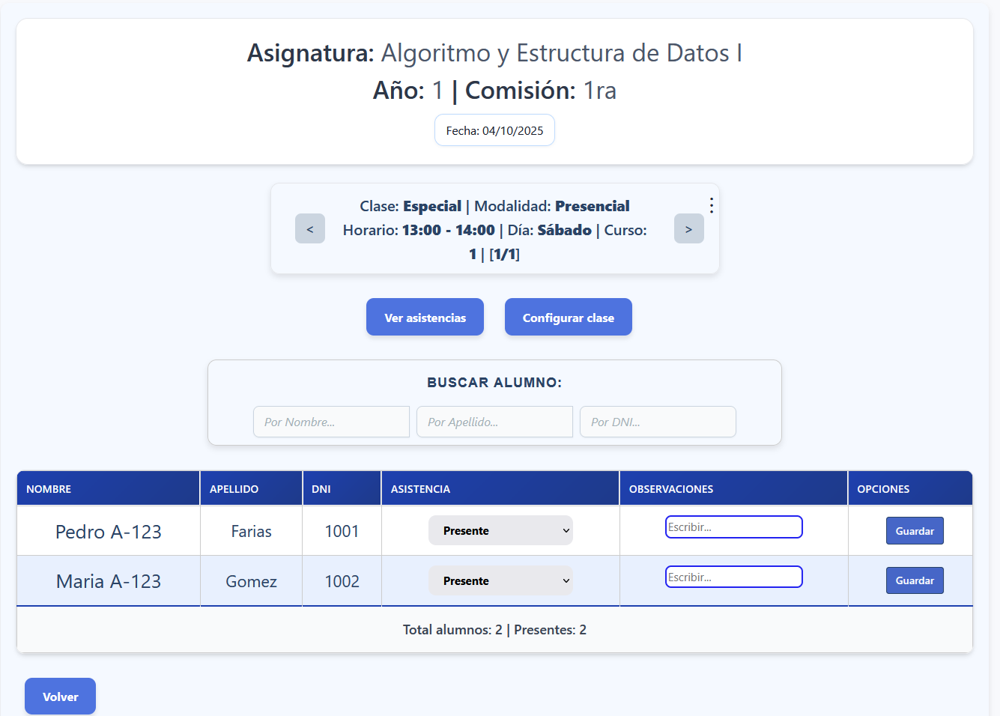
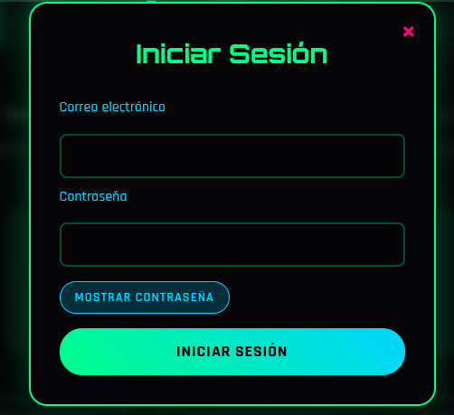

Bienvenidos, soy Facundo Garnica, analista programador con foco en el análisis de datos y el
desarrollo de software. Trabajo con Java y PHP, utilizando frameworks modernos como Symfony, Spring Boot y Angular
para crear soluciones eficientes, escalables y orientadas a resultados.
Desarrollo de un módulo de asistencias que incluye:
Vista de docentes y alumnos:
Muestra los docentes asignados y los estudiantes a su cargo.

Control de asistencias:
Registro detallado de las clases dictadas y los presentes en cada una.
Reportes de porcentajes:
Generación de estadísticas de asistencia a lo largo de la carrera.
Proyecto E-Commerce: Mercado-Mago
(En proceso de desarrollo)
Desarrollo de plataforma marketplace con arquitectura RESTful, orientada a la compra y venta de productos.
Autenticación y autorización de usuarios:
Implementación de registro, login seguro y control de accesos según roles.
Gestión de productos, publicaciones y carrito de compras:
Administración completa de productos, posibilidad de publicar ofertas y sistema de carrito dinámico.
Desarrollo en Angular:
Creación de componentes reutilizables para mejorar la escalabilidad y mantenibilidad del proyecto.
Backend con Spring Boot:
Optimización de consultas y endpoints RESTful para garantizar un alto rendimiento.
Metodologías ágiles y full stack:
Aplicación de prácticas reales de trabajo en equipo y desarrollo ágil, integrando frontend y backend.
CodeGames - Plataforma Multi-Juego Indie
Plataforma en desarrollo que permite a desarrolladores y jugadores acceder a múltiples videojuegos indie desde
una única cuenta.
Actualmente, el único juego disponible es "ArrayRun".
Gestión de usuarios unificada:
Registro y autenticación centralizada para todos los juegos.
Un solo inicio de sesión permite acceder a múltiples títulos y guardar el progreso.

Soporte multi-juego y sistema de puntuación:
Permite incorporar nuevos juegos sin reestructurar la base de datos ni el backend.
Cada juego mantiene su propia lógica, niveles y puntajes.
Se incluye un ranking con los cuatro mejores scores de los jugadores.
Selección de niveles y visualización de puntajes:
Interfaz intuitiva que permite seleccionar niveles y visualizar el puntaje obtenido en cada uno.